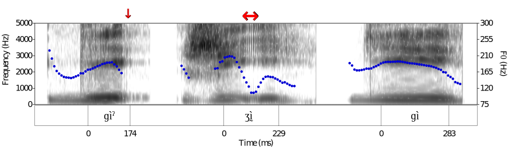
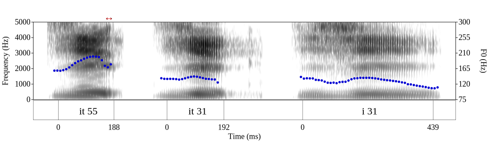
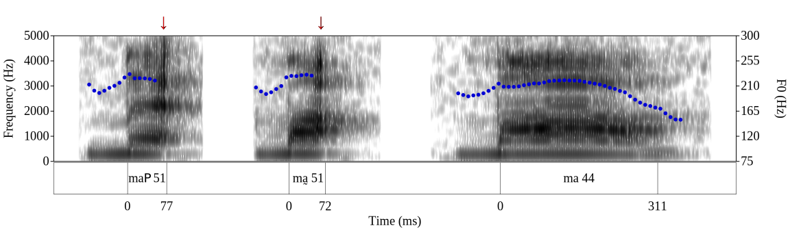
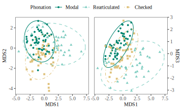

# What is "checked": case studies of Yateé Zapotec and Xiapu Min ### Yuan Chai ### University of California Los Angeles <yuanchai@g.ucla.edu> --- ### Roadmap - 1: What do we mean when we say somthing is "checked"? - 2: Why should we care? - 3: Survey: two types of checked - Zapotec: Checked phonation - Chinese: Checked syllables and tones - 4: What is the phonetic nature of checked? - Do two types of checked share the same phonetic nature? - Case studies: Xiapu Min (Chinese) and Yatee Zapotec - 5: For constituents like "checked" that refers to multiple phonological structures, how do we analyze them? --- ### What do we mean when we say something is "checked"? Isthmus Zapotec <table> <tbody style = "font-size: 23px;"> <tr> <td>(1)</td> <td style="color: red;">Checked</td> <td style="color: red;">/ɡìˀ/</td> <td style="color: red;">"excrement"</td> </tr> <tr> <td> </td> <td>Laryngealized</td> <td>/ʒı̰̀/</td> <td>"nose"</td> </tr> <tr> <td> </td> <td>Modal</td> <td>/ɡì/</td> <td>"fire"</td> </tr> <tr> <td> </td> <td style="font-size: 20px;" colspan=3> (Pickett et al., 2010) </td> </tr> </tbody> </table>  <audio controls><source src="audio/1_excrement.wav" type="audio/wav"></audio><audio controls><source src="audio/2_nose.wav" type="audio/wav"></audio><audio controls><source src="audio/3_fire.wav" type="audio/wav"></audio> - <font size = "5.9">"Checked" refers to a phonation type realized with glottalization at the end of vowel.</font> --- ### What do we mean when we say something is "checked"? Meixian Hakka <table> <tbody style = "font-size: 23px;"> <tr> <td>(2)</td> <td style="color: red;">Checked</td> <td style="color: red;">/it 55/</td> <td style="color: red;">"wing"</td> <td style="color: red;">Checked</td> <td style="color: red;">/it 31/</td> <td style="color: red;">"benefit"</td> </tr> <tr> <td></td> <td>Unchecked</td> <td>/i 31/</td> <td>"rain"</td> <td>Unchecked</td> <td>/i 33/</td> <td>"clothes"</td> </tr> <tr> <td></td> <td>Unchecked</td> <td>/i 53/</td> <td>"idea"</td> <td>Unchecked</td> <td>/i 11/</td> <td>"aunt"</td> </tr> <tr> <td> </td> <td style="font-size: 20px;" colspan=6> (Lee & Zee, 2009) </td> </tr> </tbody> </table>  <audio controls><source src="audio/4_wing.wav" type="audio/wav"></audio><audio controls><source src="audio/5_benefit.wav" type="audio/wav"></audio><audio controls><source src="audio/6_rain.wav" type="audio/wav"></audio> - <font size = "5">"Checked" refers to syllables closed by /-p, -t, -k/ which also bear different tones from open and nasal-closed syllables.</font> --- ### What do we mean when we say something is "checked"? Burmese <table> <tbody style = "font-size: 23px;"> <tr> <td>(3)</td> <td style="color: red;">Checked</td> <td style="color: red;">/maʔ 51/</td> <td style="color: red;">"March"</td> <td>Creaky</td> <td>/maˀ 51/</td> <td>"female"</td> </tr> <tr> <td></td> <td>High</td> <td>/ma 44/</td> <td>"towering"</td> <td>Low</td> <td>/ma 22/</td> <td>"hard"</td> </tr> <tr> <tr> <td> </td> <td style="font-size: 20px;" colspan=6> (Watkins, 2001) </td> </tr> </tbody> </table>  <audio controls><source src="audio/7_march.wav" type="audio/wav"></audio><audio controls><source src="audio/8_female.wav" type="audio/wav"></audio><audio controls><source src="audio/9_towering.wav" type="audio/wav"></audio> - <font size = "5">“Checked” refers to /ʔ/ closed syllables bearing only Falling tone (vs. other syllables can bear High, Low, Falling three tones).</font> --- ### Why should we care? - Apparently, "checked" refers to different phonological structures among Isthmus Zapotec, Meixian Hakka, and Burmese - <table> <tbody style = "font-size: 23px;"> <tr> <td>Isthmus Zapotec</td> <td style="color: blue;">Checked phonation</td> <td>/ɡìˀ/</td> <td>"excrement"</td> </tr> <tr> <td>Meixian Hakka</td> <td style="color: brown;">Checked syllable & tone</td> <td>/it 55/</td> <td>"wing"</td> </tr> <tr> <td>Burmese</td> <td style="color: brown;">Checked syllable & tone</td> <td>/maʔ 51/</td> <td>"March"</td> </tr> <tr> <td></td> <td style="color: green;">Unchecked syllable & tone</td> <td>/maˀ 51/</td> <td>"female"</td> </tr> </tbody> </table> - Characteristics found in checked constituents: - Having vowel-final glottalization - Having a distinct or restricted tonal distribution - Having a short duration --- ### Why should we care? - When a term refers to different things - Do we really need this term? - Does "checked" refer to distinct features and/or categories, - Or can it be reduced into an existing phonological feature or category, - Such as **glottalized phonation**, **tone**, or **short duration**? - If this term refers to distinct features and/or categories - Should we create a different term for each phenomenon? --- ### Why should we care? When a term refers to different things Do we really need this term? <p class = "subpoint" style="color: red;">Does "checked" refer to distinct features and/or categories,</p> <p class = "subpoint" style="color: red;">Or can it be reduced into an existing phonological feature or category,</p> <p class = "subpoint" style="color: red;">Such as <strong>glottalized phonation</strong>, <strong>tone</strong>, or <strong>short duration</strong>?</p> If this term refers to distinct features and/or categories <p class = "subpoint">Should we create a different term for each phenomenon?</p> --- ### Survey: two types of checked Zapotec - 20 varieties <table> <tbody style = "font-size: 26 px;"> <tr> <td>Core</td> <td>Amatlán, Texmelucan</td> </tr> <tr> <td>Central</td> <td>Tilquiapan, San Francisco Ozolotepec, San Juan Mixtepec, Santa Catarina Quioquitani, Ayoquesco, Santa Ana del Valle, Teotitlán del Valle, Isthmus, Guienagati, Mitla, San Lucas Quiaviní</td> </tr> <tr> <td>Northern</td> <td>Canjonos, Choapan, Yalálag, Betaza, Zoogocho, Tabaa, Yatzachi</td> </tr> </tbody> </table> --- ### Survey: two types of checked Chinese - 94 varieties <table> <tbody style = "font-size: 20px;"> <tr> <td>Gan 赣</td> <td>Anyi 安义, Chongyang 崇阳, Chaling 茶陵, Duchang 都昌, Jianning 建宁, Jishui Luotian 吉水螺田, Liling Baitutan 醴陵白兔潭, Liling Lujiang 醴陵渌江, Liuyang Jiaoxi 浏阳焦溪, Nancheng 南城, Xinyu Shatu 新余沙土, Shaowu 邵武, Susong Heta 宿松河塔, Pingjiang Chengguan 平江城关, Pingjiang Meixian 平江梅仙, Pingjiang Nanjiang 平江南江, Wuning 武宁, Xiushui 修水, Xupu Longtan 溆浦龙潭, Yangxin Guohe 阳新国和, Yiyang 戈阳, Yongxin 永新, Yueyang Xinqiang 岳阳新墙, Yugan 余干 </td> </tr> <tr> <td>Hakka 客家</td> <td>Changting 长汀, Dayu 大余, Ganxian Panlong 赣县蟠龙, Heyuan 河源, Hong Kong Xigong Hakka 香港西贡客家话, Jiexi 揭西, Meixian 梅县, Ningdu 宁都, Ninghua 宁化, Wengyuan 翁源, Liannan 连南, Luchuan 陆川, Luoyuan She 罗源畲族, Qingxi 清溪, Sandu 三都, Xihe 西河, Xin'an 新安, Xiuzhuan 秀篆, Wuping Yanqian 武平岩前 </td> </tr> <tr> <td>Jin 晋</td> <td> Baochang 宝昌, Baotou 包头, Dongsheng 东胜, Fengzhen 丰镇, Huhetaote 呼和浩特, Shangdu 商都, South Taiyuan 太原南郊 </td> </tr> <tr> <td>Min 闽</td> <td>Amoy 厦门, Danzhou Hainan 海南儋州, Ding'an 定安, Fuzhou 福州, Gutian Pinghu 古田平湖, Hainan Wenchang 海南文昌, Jianyang 建阳, Jianou 建瓯, Northern Taiwan 台湾北部, Pingxi 平溪, Pucheng 浦城, Putian Daitou 莆田埭头, Putian Jiangkou 莆田江口, Shaxia Gaizhu 沙县盖竹, Shaowu 邵武, Taiwanese 台湾, Yun'ao 云澳, Zhangzhou 漳州 </td> </tr> <tr> <td>Wu 吴</td> <td>Luqiao 路桥, Ningbo 宁波, Shanghainese 上海, Shaoxing 绍兴, </td> </tr> <tr> <td>Xiang 湘</td> <td>Changsha 长沙, Chishan 赤山 </td> </tr> <tr> <td>Yue 粤</td> <td>Cantonese, Dongkeng 东坑, Gaobuxiansha 高埗冼沙, Hengli 横沥, Humenchigang 虎门赤岗, Shijie 石碣, Taishanese 台山, Tangxia 塘厦, Wangniudun 望牛墩, Wanjiang 万江, Zhongtangjiangnan 中堂江南 </td> </tr> <tr> <td>Jianghuai Mandarin<br>江淮官话</td> <td> Anqing 安庆, East Hefei 肥东, Nanjing 南京, Nantong 南通, Ningbo 宁波, Rugao 如皋, Wuhu 芜湖 </td> </tr> <tr> <td>Southwest Mandarin<br>西南官话</td> <td> Kunming 昆明, Lizhuang 李庄 </td> </tr> </tbody> </table> --- ### Survey: two types of checked #### Zapotec - In Zapotec, "checked" is a phonation category with late-phased glottalization realized on vowels. - <svg width="600" height="500"> <text x="10" y="50" class="small">Creaky V̰</text> <text x="10" y="80" class="small">In phase gl</text> <text x="10" y="200" class="small">Rearticulated VˀV</text> <text x="10" y="230" class="small">Mid-phased gl</text> <text x="10" y="350" class="small">Checked Vˀ</text> <text x="10" y="380" class="small">Late-phased gl</text> <rect x="300" y="20" width="300" height="50" style="fill: white; stroke:black;stroke-width:2;" /> <text x="400" y="50" class="small">Vowel</text> <rect x="300" y="80" width="300" height="50" style="fill: white; stroke:black;stroke-width:2;" /> <text x="310" y="115" class="small">[+constricted glottis]</text> <rect x="300" y="170" width="300" height="50" style="fill: white; stroke:black;stroke-width:2;" /> <text x="400" y="200" class="small">Vowel</text> <rect x="375" y="230" width="150" height="50" style="fill: white; stroke:black;stroke-width:2;" /> <text x="410" y="265" class="small">[+c.g.]</text> <rect x="300" y="320" width="300" height="50" style="fill: white; stroke:black;stroke-width:2;" /> <text x="400" y="350" class="small">Vowel</text> <rect x="450" y="380" width="150" height="50" style="fill: white; stroke:black;stroke-width:2;" /> <text x="480" y="415" class="small">[+c.g.]</text> </svg> --- ### Survey: two types of checked #### Zapotec - Can Vˀ in Zapotec be reduced to **glottalized phonation**? - No. - Different phasings of glottalization are contrastive or allophonic in several varieties. - But the phasing of glottalization in *glottalized phonation* is unspecified. - <table> <tbody style = "font-size: 26px;"> <tr> <td style="width: 20%;">/Vˀ/ - /VˀV/</td> <td>Teotitlán, Isthmus, Choapan, Yalálag, Betaza, Texmelucan, Guienagati, Zoogocho, Tabaa, Mitla, San Lucas Quiaviní</td> </tr> <tr> <td>[Vˀ] ~ [VˀV]</td> <td>Tilquiapan, San Francisco Ozolotepec, San Juan Mixtepec, Ayoquesco</td> </tr> <tr> <td>No description of [Vˀ]</td> <td>Amatlán, Santa Catarina Quioquitani, Cajonos, Santa Ana del Valle</td> </tr> </tbody> </table> --- ### Survey: two types of checked #### Zapotec - Can Vˀ in Zapotec be reduced to **tone**? - No. - For varieties in the survey, Vˀ contrasts with V and VˀV independently of tone. - <table style="width: 60%;"> <tbody style = "font-size: 26px"> <tr> <td style="width: 20%;">Interaction type</td> <td style="width: 10%;">Example</td> <td style="width: 10%;">V</td> <td style="width: 10%;">Vˀ</td> <td style="width: 10%;">VˀV</td> </tr> <tr> <td>Fully-crossed <br> </td> <td>Isthmus</td> <td>H L R</td> <td>H L R</td> <td>H L R</td> </tr> <tr> <td>Subset<br> </td> <td>Yalálag</td> <td>H L F</td> <td>H L</td> <td>H L F</td> </tr> </tbody> </table> --- ### Survey: two types of checked #### Zapotec - Can Vˀ in Zapotec be reduced to **short duration**? - No. - There is not a consistent three-way contrast in duration between modal, rearticulated, and checked vowels. - Although Vˀ tend to have a short duration, there are great variations in duration for V, VˀV and Vˀ. --- ### Survey: two types of checked #### Zapotec - It is necessary to propose a term "checked phonation" as a distinct phonological category in Zapotec. - The checked phonation category can be reduced to the existing feature of [+constricted glottis] with temporal restriction (late-phased). --- ### Survey: two types of checked #### Chinese - Checked refers to a phonotactic rule between syllable and tone in Chinese: - Obstruent-closed syllables are associated with a different set of tones from open syllables and nasal-closed syllables. <!-- - <table style="width: 90%;"> <tbody style = "font-size: 26px"> <tr> <td style="width: 20%;">Checked syllable:</td> <td>Syllables that are closed by obstruents and associated with a different set of tones from open syllables and sonorant-closed syllables;</td> </tr> <tr> <td>Checked tone:</td> <td>Tones that are borne by checked syllables.</td> </tr> </tbody> </table> --> - <table style="width: 100%;"> <tbody style = "font-size: 26px"> <tr> <td></td> <td colspan="6">Meixian Hakka</td> <td></td> <td colspan="6">Shanghainese</td> </tr> <tr> <td>(5)</td> <td colspan="3">Checked</td> <td colspan="3">Unchecked</td> <td>(6)</td> <td colspan="3">Checked</td> <td colspan="3">Unchecked</td> </tr> <tr> <td></td> <td>55</td> <td>si<span style="color: red">p</span> 55</td> <td>"to collect"</td> <td>31</td> <td>i 31</td> <td>"rain"</td> <td></td> <td>5</td> <td>pɪ<span style="color: red">ʔ</span> 5</td> <td>"pen"</td> <td>51</td> <td>pi 51</td> <td>"edge"</td> </tr> <tr> <td></td> <td></td> <td>i<span style="color: red">t</span> 55</td> <td>"wing"</td> <td>33</td> <td>i 33</td> <td>"clothes"</td> <td></td> <td>12</td> <td>bɪ<span style="color: red">ʔ</span> 12</td> <td>"other"</td> <td>13</td> <td>bi 13</td> <td>"skin"</td> </tr> <tr> <td></td> <td></td> <td>sa<span style="color: red">k</span> 55</td> <td>"stone"</td> <td>53</td> <td>i 53</td> <td>"idea"</td> <td></td> <td></td> <td></td> <td></td> <td>34</td> <td>pi 34</td> <td>"flat"</td> </tr> <tr> <td></td> <td>31</td> <td>se<span style="color: red">p</span> 31</td> <td>"garbage"</td> <td>11</td> <td>i 11</td> <td>"aunt"</td> <td rowspan="7"></td> </tr> <tr> <td></td> <td></td> <td>i<span style="color: red">t</span> 31</td> <td>"benefit"</td> <td></td> <td></td> <td></td> <td rowspan="7"></td> </tr> <tr> <td></td> <td></td> <td>sɔ<span style="color: red">k</span> 31</td> <td>"rope"</td> <td></td> <td></td> <td></td> <td rowspan="7"></td> </tr> </tbody> </table> --- ### Survey: two types of checked #### Chinese - Can checked constituents in Chinese be reduced to <strong>a category of syllable</strong>? - Yes. - All checked syllables in Chinese are obstruent-closed syllables. --- ### Survey: two types of checked #### Chinese - Can checked constituents in Chinese be reduced to <strong>a category of tone</strong>? - Yes. - Checked tones refer to tones that are borne by obstruent-closed syllables. --- ### Survey: two types of checked #### Chinese - Can checked constituents in Chinese be reduced to <strong>short duration</strong>? - Maybe. - In the survey, the majority of checked syllables has a shorter duration than unchecked syllables. - But we also see cases where obstruent-closed syllables have comparable or even longer duration than open syllables: Zhangzhou Min; Hong Kong Cantonese --- ### Survey: two types of checked #### Chinese - "Checked" in Chinese can be reduced to obstruent-closed syllable and their associated tones. - "Checked" is a descriptor of the phonological restriction between syllable shape and tone. --- ### Survey: two types of checked #### Zapotec vs. Chinese <table style="width: 90%;"> <tbody> <tr> <td></td> <td>Zapotec</td> <td>Chinese</td> </tr> <tr> <td>Abstraction</td> <td>Vˀ</td> <td>Vp, t, k, ʔ + tone</td> </tr> <tr> <td>Interaction with tone</td> <td>Tonally-independent</td> <td>Tonally-dependent</td> </tr> <tr> <td>Phonological nature</td> <td>A category of phonation</td> <td>A descriptor of phonological restriction</td> </tr> <tr> <td>Reduced to</td> <td>[+constricted glottis] + late-phasing</td> <td>Obstruent-closed syllable + A set of tone</td> </tr> </tbody> </table> --- ### What is the phonetic nature of checked? #### Case studies: Yateé Zapotec and Xiapu Min - Yateé Zaptec: checked phonation - Xiapu Min: checked syllable and checked tone --- ### What is the phonetic nature of checked? #### Yateé Zapotec <table style="width: 90%;"> <tbody style = "font-size: 25px"> <tr> <td></td> <td colspan = "3" style="font-weight: bold;">Modal</td> <td colspan = "3" style="font-weight: bold;">Rearticulated</td> <td colspan = "3" style="font-weight: bold;">Checked</td> </tr> <tr> <td style="font-weight: bold;">Low</td> <td>/ʂnːà/</td> <td>〈xna〉</td> <td>"red"</td> <td>/ʂnːàˀà/</td> <td>〈xna'a〉</td> <td>"my mother"</td> <td>/nàˀ/</td> <td>〈nha〉</td> <td>"there"</td> </tr> <tr> <td style="font-weight: bold;">High</td> <td>/lːá/</td> <td>〈la〉</td> <td>"hot"</td> <td>/zíˀí/</td> <td>〈zi'i〉</td> <td>"heavy"</td> <td>/ʐáˀ/</td> <td>〈xha〉</td> <td>"clothes"</td> </tr> <tr> <td style="font-weight: bold;">Rising</td> <td>/gǎ/</td> <td>〈ga〉</td> <td>"nine"</td> <td>/wèˀé/</td> <td>〈we'e〉</td> <td>"get drunk"</td> <td>/wěˀ/</td> <td>〈we'〉</td> <td>"wound"</td> </tr> <tr> <td style="font-weight: bold;">Falling</td> <td>/jô/</td> <td>〈yo〉</td> <td>"dirt"</td> <td>/jóˀò/</td> <td>〈yo'o〉</td> <td>"house"</td> <td>/kâˀ/</td> <td>〈ka'〉</td> <td>"like that"</td> </tr> </tbody> </table> <audio controls><source src="audio/10_red.wav" type="audio/wav"></audio><audio controls><source src="audio/11_mother.wav" type="audio/wav"></audio><audio controls><source src="audio/12_there.wav" type="audio/wav"></audio><br> <audio controls><source src="audio/13_hot.wav" type="audio/wav"></audio><audio controls><source src="audio/14_heavy.wav" type="audio/wav"></audio><audio controls><source src="audio/15_clothes.wav" type="audio/wav"></audio><br> <audio controls><source src="audio/16_nine.wav" type="audio/wav"></audio><audio controls><source src="audio/17_drunk.wav" type="audio/wav"></audio><audio controls><source src="audio/18_wound.wav" type="audio/wav"></audio><br> <audio controls><source src="audio/19_dirt.wav" type="audio/wav"></audio><audio controls><source src="audio/20_house.wav" type="audio/wav"></audio><audio controls><source src="audio/21_like_that.wav" type="audio/wav"></audio> - 49 monosyllabic words were elicited in isolation from a male speaker of Yateé Zapotec. Each word was repeated three times. --- ### What is the phonetic nature of checked? #### Yateé Zapotec - Acoustic measures: - F0 - Amplitude of voicing (Strength of Excitation SoE) - Residual H1* (Chai & Garellek, 2022): Smaller H1, more glottal constriction - Harmonic-to-noise ratio (HNR): Lower HNR, more noise - Duration - Which acoustic measures distinguish the three phonations most effectively? --- Results of multi-dimensional scaling (MDS) <table style="width: 110%;"> <tbody style = "font-size: 25px"> <tr> <td style="text-align:right"><span style="color: #dfc27d">Checked</span> vs. <span style="color: #018571">Modal</span>, <span style="color: #80cdc1">Rearticulated</span><br> Duration, Amplitude of voicing </td> <td style="vertical-align: middle;text-align: center;display: inline-block;"></td> <td style="text-align:left"><span style="color: #018571">Modal</span> vs. <span style="color: #dfc27d">Checked</span>, <span style="color: #80cdc1">Rearticulated</span><br> F0, Residual H1* </td> </tr> <tr> <td></td> <td style="text-align:center"><span style="color: #80cdc1">Rearticulated</span> vs. <span style="color: #018571">Modal</span>, <span style="color: #dfc27d">Checked</span><br> Amplitude of voicing </td> <td></td> </tr> </tbody> </table> ---